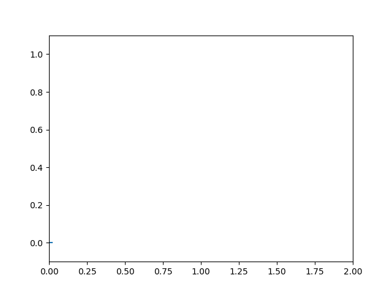

Emulates an oscilloscope.
import numpy as np
from matplotlib.lines import Line2D
import matplotlib.pyplot as plt
import matplotlib.animation as animation
class Scope(object):
def __init__(self, ax, maxt=2, dt=0.02):
self.ax = ax
self.dt = dt
self.maxt = maxt
self.tdata = [0]
self.ydata = [0]
self.line = Line2D(self.tdata, self.ydata)
self.ax.add_line(self.line)
self.ax.set_ylim(-.1, 1.1)
self.ax.set_xlim(0, self.maxt)
def update(self, y):
lastt = self.tdata[-1]
if lastt > self.tdata[0] + self.maxt: # reset the arrays
self.tdata = [self.tdata[-1]]
self.ydata = [self.ydata[-1]]
self.ax.set_xlim(self.tdata[0], self.tdata[0] + self.maxt)
self.ax.figure.canvas.draw()
t = self.tdata[-1] + self.dt
self.tdata.append(t)
self.ydata.append(y)
self.line.set_data(self.tdata, self.ydata)
return self.line,
def emitter(p=0.03):
'return a random value with probability p, else 0'
while True:
v = np.random.rand(1)
if v > p:
yield 0.
else:
yield np.random.rand(1)
# Fixing random state for reproducibility
np.random.seed(19680801)
fig, ax = plt.subplots()
scope = Scope(ax)
# pass a generator in "emitter" to produce data for the update func
ani = animation.FuncAnimation(fig, scope.update, emitter, interval=10,
blit=True)
plt.show()
Total running time of the script: ( 0 minutes 0.035 seconds)